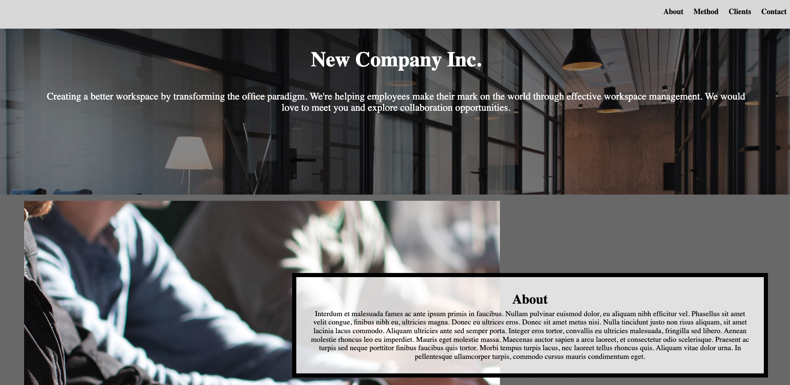
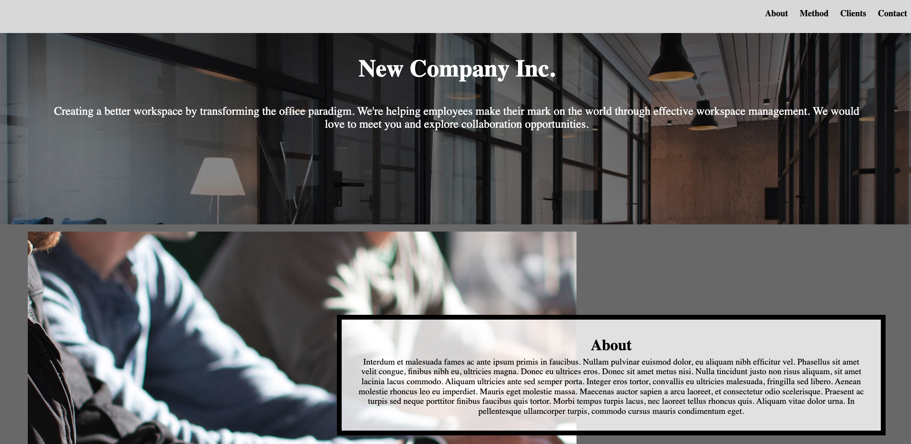

What will you learn?
The purpose of this course is to provide students with all necessary skills for building and deployinging websites.
Some content covered in the course includes:
- Understanding the interactions between web browsers and web servers using Hypertext Transport Protocol (HTTP)
- Understanding the importance of standards-based practices in web development
- Understanding the importance of separating structure and semantics from presentation, as well as how this is accomplished in professional web development
- Creating web pages using Hypertext Markup Language (HTML5)
- Styling web pages using Cascading Style Sheets (CSS3)
- Using JavaScript for basic validation and interaction.
- Lastly, Using other software tools to augment and review the syntax, semantics, and accessibility of your site.
How is the Class Set up?
This is designed as an in-person course and it is expected that students will be available in-person for all lectures and discussions. Of course we understand that things do arise and we want students to focus on their health and well-being. Therefore, efforts will be made to record all lectures, but the quality is often degraded from the in-person experience. However, after nine (9) absences of any type, you will lose the participation points for this course.
In the past the lectures were a comprehensive coverage of the readings. This year it will be expected that students complete all of the readings and the lectures will highlight the material. Discussion sections will be an integral part of getting support in this class and students may only attend the discussion section for which they are enrolled. Discussions will always involve group/paired work, and the second lecture of each week will be used for hands-on learning as well as student demonstrations.
Projects
Throughout the course, you will work on several projects that will help you apply the concepts you've learned and build your own websites:
- A company website
- An Uno tuturial
- Personal portfolio website
- Anything you can build with the knowledge provided by the course
Here are some images you will become familiar with as you go on with this course:

 
